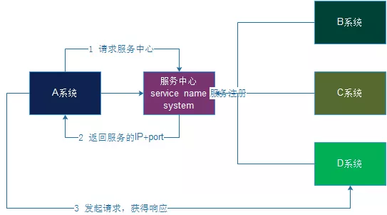

概述
这篇文章的目标
- 总结架构师必备的特质
- 梳理常见的架构思维
- 梳理常见的中间件技术
架构师必备的特质
- 一名优秀的架构师，在设计系统时需要有以下这四项关键能力：「平衡取舍、预判未来、抽象思维、容错机制」
- 作为一名优秀的 SRE, 在设计技术方案时，也需要提升这四项关键能力.
平衡取舍
一个架构本质上总会有优有劣，它不可能是完美的、普适的，也不存在一个架构在 A 场景能用，在 B 场景也最适用的情况，所以就需要我们准确判断，作出取舍。 我们可以根据具体的业务需求来调整架构，也就是以当前的业务需求，选出最匹配的架构。另外，架构师还需要根据现状衡量好需求和资源、效率和安全、时延和吞吐等等之间的关系，做出判断。 比如对于在线交易系统，可能更重要的是保证它的低时延，因此就可以牺牲一定的吞吐量，而对于离线系统，吞吐量则更重要一些。
- 满足业务需求的前提下，最大化 ROI.
预判未来
架构师需要具备一定的未来的预判能力，因为架构的调整周期通常比较长。这也是程序员和架构师之间一个很大的区别所在。 程序员负责一个项目，在当前的互联网大背景下，项目的迭代周期非常快，基本以天或周为单位，最多一个月。如果发现不合适的代码，需要重构，程序员基本也能在几天或几周内就能完成重构。 而架构的调整是相对漫长的过程，可能需要数月，甚至要几年。因此，在设计架构时就需要架构师具备预判意识，对很多不确定的事情做出预判和选择，诸如未来访问量会增长到什么量级，会不会产生新的业务，这些会对系统产生什么样新的要求等等。
- 具备技术敏感度,预判业务未来走向.
抽象思维
除了懂得取舍和拥有预判意识，架构师在设计架构时还要掌握抽象的方法，不能胡子眉毛一把抓，要做好分层和区隔。 因为架构师面对的是一个很庞大的系统，为了避免过早陷入细节，不要去看各个组件的细节，而是把它们的角色定义下来之后，再分块来思考。而在看每个分块时，其他分块都可以视为一个抽象的概念，另外，也需要考虑复用的问题。
- 这里很重要的一点就是想清楚目标，然后进行分层，设计好每一层作用、上下层之间的接口.
容错机制
相比程序员，架构师面对的环境要恶劣的多，因为系统更复杂了，出错的概率也增加了，每个节点、每个功能都有可能出错，所以这就需要架构师为错误而设计（Design For Failure），事先提前做好解决方案。
除了应用出错，还有可能产生数据丢失的情况，这个可以通过备份来预防。
另外，如果出现故障，该怎样做到快速恢复呢？我们现在普遍的做法是不修只换，因为如果要修复一个异常状态，可能修复后还会出现连带问题，而如果能通过技术手段，删除已出现的故障，换一个全新的系统，就能够保证它迅速恢复到正常状态。
- Design For Failure
- 故障预案
一些优秀的架构思想
以下是一些做架构设计时的好的方法论
- 关注端到端的价值交付，技术团队要持续地顺畅交付有效价值给业务
- 战略上藐视技术，战术上重视技术
- 设计技术方案时，一些好的 Idea
- 以空间换时间，牺牲写性能换取读性能
- 技术方案注重冷热分离的思考
- 技术方案注重推模型、拉模型、推拉结合的思考
- 故障处理时
只换不修的思维, 直接给用户换一个新系统
常用的中间件技术总结
以下是架构师常用到的中间件技术 包括如下:
- LB 技术
- 缓存技术
- 线程池技术
- MQ 技术
- 数据库技术
- 服务注册和发现技术
- 微服务和服务网格技术
- 客户端网络质量改善技术
- 客户端稳定性提升技术
- 客户端埋点最佳实践
LB 技术
- LB 技术属于常用的一项中间件技术，经常用来做产品的流量入口或者内部服务之间互相调用的中间件. 注意区分 4 层反向代理，还是 7 层反向代理.
- LB 的负载均衡策略，可以参考前面总结的"Nginx 的均衡策略", 其他的负载均衡器具备的能力都非常相似.
缓存技术
工程上，缓存一般有几种使用方式？
（1）进程内缓存；
（2）进程外缓存，也就是缓存服务；
如果有多个服务使用进程内缓存，如何保证一致性？
常见的有三种方法：
- 服务节点同步通知；
- MQ 异步通知；
- 牺牲少量一致性，定期后端更新；
绝大部分情况，还是应该使用缓存服务(例如 Redis). 缓存服务的使用，有什么注意点？
以下几点，应该要注意：
- 服务与服务之间不要通过缓存传递数据；
- 如果缓存挂掉，可能导致雪崩，此时要做高可用缓存，或者水平切分；
- 调用方不宜再单独使用缓存存储服务底层的数据，容易出现数据不一致，以及反向依赖；
- 不同服务，缓存实例要做垂直拆分，不宜共用缓存；
缓存服务的最佳实践
读缓存最佳实践
- 先读缓存，命中则返回；未命中则读数据库，然后设置缓存。
写缓存最佳实践
- 淘汰缓存，而不是修改缓存；
- 先操作数据库，再操作缓存；
缓存的本质是什么
- 缓存的本质是“冗余了数据库中的数据”。 可能存在什么问题？缓存与数据库数据不一致。
- 出现不一致时，优化思路是什么？及时把缓存中的脏数据淘汰掉。
什么时候选择优先使用 Redis？
（1）需要支持复杂数据结构；
（2）需要支持持久化；
（3）需要天然高可用；
（4）value 存储内容比较大；
线程池技术
- 这里区分
连接池和线程池, 其实本质上都是保存worker的池子
连接池
连接池的核心是什么？两个核心数据结构：连接数组，锁数据；三个核心接口：初始化，拿出连接，放回连接；
线程池
线程池技术解决的问题是： 保持一定量的 worker 线程，把提交任务和执行任务进行解耦.
- 当任务到达时，任务可以不需要等到线程创建就能立即执行.
线程池有 7 个核心参数
-
这些参数分别是
-
int corePoolSize：核心线程数 int maximumPoolSize：最大线程数long keepAliveTime：非核心线程的空闲时间TimeUnit unit：空闲时间的单位BlockingQueue<Runnable> workQueue：任务队列（线程安全的阻塞队列）ThreadFactory threadFactory：线程工厂-
RejectedExecutionHandler handler：拒绝策略 -
corePoolSize: 一开始任务数少的时候， 线程数量不会一下子全开好，而是每当有一个新任务进来，同时没有空闲线程时，就会新开一个线程, 如何创建线程呢，由theadFactory方法指定。直到达到corePoolSize这个数量 -
当达到
corePoolSize时，如果还有任务不断被提交进来，同时没有空闲线程去做这些任务，那么会被加入一个队列，workQueue -
直到有那么一个时刻，
workQueue满了，（主要是秒杀类的高 QPS 业务场景）那么线程池又会继续加线程数量，直到加满maximumPoolSize -
如果加满
maximumPoolSize还不够，那么新来的任务会被拒绝，拒绝的处理者就是那个handler定义的方法. -
如果加满（或者大于
corePoolSize但是小于maximumPoolSize）maximumPoolSize足够处理新任务, 那么一段时间后，会有空闲的线程出来。 这些线程就称为非核心线程，非核心线程空闲一段时间后 ，（这段时间由keepAliveTime * unit决定），就会被销毁，减少系统资源消耗.
任务提交到线程池的整体流程
MQ 技术
3 个核心模型
- 消息(Message)
- 发布者: (Producer)
- 消费者(处理者): Consumer(worker)
3 个核心应用场景
- 解耦
-
- 上下游服务进行隔离，整体架构更加清晰、整洁.
- 削峰
-
- 对于短时间内极端流量，对后端服务可以启到保护作用.
- 异步
-
- 针对长时间的任务, 前端可以快速给用户反馈，后端可以慢慢处理.
数据库技术
这里主要探讨数据库设计上一些思考点
工程上，数据库要设计一些什么？
- 根据“业务模式”设计表结构；
- 根据“访问模式”设计索引结构；
架构上，数据库还必须考虑什么？
- 读性能提升；
- 高可用；
- 一致性保障；
- 扩展性；
- 垂直拆分；
提升系统读取速度，有哪几种常见方法？
- 建立索引；
- 增加从库；
- 增加缓存
如何保证数据库的高可用？
- 核心思想是：冗余+故障自动转移.
- 写库高可用，冗余写库；
- 读库高可用，冗余读库；
主从延时，有什么优化方案？
- 业务容忍；
- 强制读主；
- 在从库有可能读到旧数据时，选择性读主
服务发现（Service Discovery）中间件
服务发现要解决的是分布式系统中最常见的问题之一，即在同一个分布式集群中的进程或服务，要如何才能找到对方并建立连接。本质上来说，服务发现就是想要了解集群中是否有进程在监听 udp 或 tcp 端口，并且通过名字就可以查找和连接。
解决服务发现的 3 大支柱
要解决服务发现的问题，需要有下面三大支柱，缺一不可:
- 一个强一致性、高可用的服务存储目录. 基于 Raft 算法的 etcd 天生就是这样一个强一致性高可用的服务存储目录。 一致性 k/v 存储.
- 一种注册服务和监控服务健康状态的机制。 用户可以在 etcd 中注册服务，并且对注册的服务设置 key TTL，然后定时保持服务的心跳以达到监控健康状态的效果。
- 一种查找和连接服务的机制。 通过在 etcd 指定的主题下注册的服务也能在对应的主题下查找到。为了确保连接，我们可以在每个服务机器上都部署一个 Proxy 模式的 etcd，这样就可以确保能访问 etcd 集群的服务都能互相连接。
关于自动服务发现
- 是不需要修改配置，就发现了服务，调用了服务
- 有一个地方动态的读取配置，从而能自动去调用服务。
-
- 举个例子, 比如 Prometheus 进程每 5 分钟周期性读取一下配置文件(
/etc/prometheus/prometheus-file-sd.yml), 因此相应的监控 Job 修改之后无需重启 Prometheus 进程自动会被发现.
- 举个例子, 比如 Prometheus 进程每 5 分钟周期性读取一下配置文件(
服务中心
在服务中心中，分为两种：
- 一种是名称总线系统，也就是 A 系统需要调用某个服务的时候，只要请求服务中心即可，服务中心会自己去调用远程的服务然后得到响应，最后由服务中心响应给 A 系统。（ESB 企业服务总线）
- 一种是名称服务系统，也就是 A 系统需要调用某个服务的时候，去服务中心获取到远程的服务 ip+port，然后 A 系统自己发送请求获得响应（和 DNS 类似，只是为了解析出 IP 和端口)

Consul 架构图
Consul 的作用主要是管理这些集群服务的配置，整体流程是这样子的：服务（进程）启动的时候把服务名和自己的 IP、端口通过 HTTP 告诉我，我将这些信息记到自己的内存表格中，客户端调用时带上要查询的服务名通过 HTTP 发送给我，我再自己的内存表中找到叫这服务名的所有配置发送给客户端。 平时我还要做一些服务健康检查的事儿，在上面服务启动的时候，服务还要给我配置一个检查接口和检查频率等一些参数，我会按这些参数每隔一段时间，比如 10 秒钟去请求一下这个接口，如果不通，我就隔 5 秒再重试下，如果重试 3 次还不通，我就认定这个服务挂掉了，就从内存表格中删掉这个服务配置，不然客户端要请求到这个不通服务，我就罪过了。
Consul 更像是一个 full stack 的解决方案，它不仅提供了一致性 k/v 存储，还封装了服务发现，健康检查，内置了 DNS server 等等.
微服务架构和服务网格（Service Mesh）
常见的服务端架构
微服务架构要解决什么问题?
-
用户流量进入服务端之后, 服务端(指上图中的
Web服务和Worker集群)多种应用可以和操作系统的进程形成多对多的模式, 每种应用有如下特性 -
顺畅、低成本的互相调用别的
应用 - 高可用
- 无限性能扩展(自动化扩缩容)
-
负载均衡
-
微服务部署的最佳实践是什么? Kubernetes 集群
Service Mesh 的由来
负载均衡、数据收集、服务发现、调用链跟踪。这些非业务的功能，一般是谁实现的呢？
- 互联网公司一般会有一个“架构部”，研发框架、组件、工具与技术平台；
- 业务研发部门直接使用相关框架、组件、工具与技术平台，享受各种“黑科技”带来的便利；
- 对于上述“黑科技”的使用与推广，存在什么问题？框架、组件、工具与技术平台的使用与推广，往往会遇到以下一些问题：
- 业务研发团队，需要花大量时间去学习、使用基础框架与各类工具；
- 架构部，对于“黑科技”不同语言客户端的支持，往往要开发 C-client，Python-client，go-client，Java-client 多语言版本；
- 架构部，“黑科技” client 要维护 m 个版本， server 要维护 n 个版本，兼容性要测试 m*n 个版本；
- 每次“黑科技”的升级，都需要推动上下游进行升级，这个周期往往是以季度、半年、又甚至更久，整体效率极低；
解决思路是: 解耦，将业务服务拆分成两个进程：
- 一个进程实现业务逻辑（不管是调用方，还是服务提供方），
biz，即上图白色方块； - 一个进程实现底层技术体系，
proxy，即上图蓝色方块；(负载均衡、监控告警、服务发现与治理、调用链…等诸多基础设施，都放到这一层实现。)
他们之间有这样一些特点：
- biz 和 proxy 共同诞生，共同消亡，互为本地部署，即上图虚线方框；
- biz 和 proxy 之间，为本地通讯，即上图黑色箭头； 3.所有 biz 之间的通讯，都通过 proxy 之间完成，proxy 之间才存在远端连接，即上图红色箭头；
这样就实现了业务的归业务，技术的归技术，实现了充分解耦，如果所有节点都实现了解耦，整个架构会演变为：
- 绿色为
biz； - 蓝色为
proxy； 整个服务集群变成了网格状，这就是Service Mesh服务网格的由来。
Service Mesh 的行业开源最佳实践是什么？
Istio
Istio 的架构核心是什么？
Istio 架构分为两层：
- 数据平面(data plane)；
- 控制平面(control plane)；
Istio 的优势讲解
1. 一开始, Kubernetes 集群内部，通过 Service 的 ClusterIP 进行互相调用的情况
上图的 Kubernetes 集群中一共有两个节点和 4 个 Pod，每个 Pod 都有一个容器。服务 service-nginx 指向 nginx pods，服务 service-python 指向 python pods。红线显示了从 pod1-nginx 中的 nginx 容器向 service-python 服务发出的请求，该服务将请求重定向到 pod2-python。
通过服务的ClusterIP 向后端Pod进行简单的随机或轮询转发请求，Kubernetes 中的 Services 并不存在于特定的节点上，而是存在于整个集群中。我们可以在下图 中看到更多细节:
上图要更详细点，Kubernetes 中的服务是由运行在每个节点上的 kube-proxy 组件实现的，该组件创建 iptables 规则，并将请求重定向到 Pod。因此，服务就是 iptables 规则。(还有其他不使用 iptables 的代理模式，但过程是相同的。)
2. 有了 Istio 之后, Control Plane 和 Data Plane 之间通讯的示意图
Istio 最常见的代理是 Envoy，当然也可以使用其他代理（如 Nginx），所以我们将代理称为istio-proxy。
我们可以看到不再显示 kube-proxy 组件，这样做是为了保持图像的整洁，这些组件仍然存在，但是拥有 istio-proxy 的 Pods 将不再使用 kube-proxy 组件了。
每当配置或服务发生变化时，Istio 控制平面就会对所有 istio-proxy sidecars 进行处理，类似于图 2 中 Kubernetes API 处理所有 kube-proxy 组件的方式。Istio 控制平面使用现有的 Kubernetes 服务来接收每个服务点所指向的所有 pods ，通过使用 pod IP 地址，Istio 实现了自己的路由。
3 在 Istio 控制平面对所有 istio-proxy sidecars 处理之后，它看起来是这样的
在图 4 中，我们看到 Istio 控制平面如何将当前配置应用到集群中的所有 istio-proxy 容器，Istio 将把 Kubernetes 服务声明转换成它自己的路由声明。
4 让我们看看如何使用 Istio 发出请求:
在上图中，所有的 istio-proxy 容器已经被 Istio 控制平面所管控，并包含所有必要的路由信息，如图 3/4 所示，来自 pod1-nginx 的 nginx 容器向 service-python 发出请求。
请求被 pod1-nginx 的 istio-proxy 容器拦截，并被重定向到一个 python pod 的 istio-proxy 容器，该容器随后将请求重定向到 python 容器。
Istio 的优势总结
现在所有流量都通过每个 Pod 中的 istio-proxy 容器进行路由，每当 istio-proxy 接收并重定向一个请求时，它还会将有关该请求的信息提交给 Istio 控制平面。因此 Istio 控制平面可以准确地知道该请求来自哪个 Pod、存在哪些 HTTP 头、从一个istio-proxy 到另一个 istio-proxy 的请求需要多长时间等等。在具有彼此通信的服务的集群中，这可以提高可观察性并更好地控制所有流量
-
先进的路由，Kubernetes内部Services只能对Pods执行轮询或随机分发请求，使用Istio可以实现更复杂的方式。比如，如果发生错误，根据请求头进行重定向，或者重定向到最少使用的服务。 -
部署，它允许将一定比例的流量路由到特定的服务版本，因此允许绿色/蓝色和金丝雀部署。 -
加密，可以对Pods之间从istio-proxy到istio-proxy的集群内部通信进行加密。 -
监控/图形，Istio可以连接到Prometheus等监控工具，也可以与Kiali一起展示所有的服务和他们的流量。
-
追踪，因为Istio 控制平面拥有大量关于请求的数据，所以可以使用 Jaeger 等工具跟踪和检查这些数据。
客户端网络质量改善技术
本质上都是利用边缘节点(代理节点)以及优化的骨干网络来降低用户访问服务端的延迟，提升用户体验.
- 代理节点
- CDN 的边缘节点
- 公司自研的代理节点
- 做好自动主备切换多 CDN 供应商
- 优化的骨干网络
- 利用公有云的骨干网络
- 拉专线
客户端稳定性提升
以下是不同业务客户端都会需要的一些通用功能
- 客户端网络探测器, 探测最快到达服务端的路径利器, 客户端选择路径有时候并不是直连服务端最快，而是先连接到加速节点, 再由加速节点代理回到服务端快. 因此不同客户端直接需要实现一个通用的 SDK.
- 客户端 Dump 系统, 搜集不同客户端奔溃率并上报.
- 客户端通用下载器, 业务程序无需实现下载逻辑, 直接调用相关 SDK
- HTTPDNS SDK, 防劫持
- LBS SDK, 客户端获取地理位置、附近的人等
- 通用问题探测(Detect)和上报相关 SDK, 不同客户端可以直接集成该 SDK, 在用户使用客户端的任意阶段有问题都可以上报
客户端埋点最佳实践
- 待补充